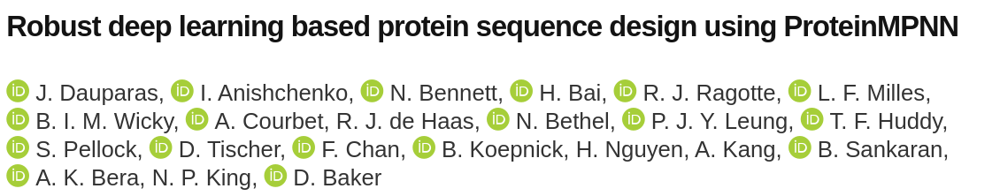
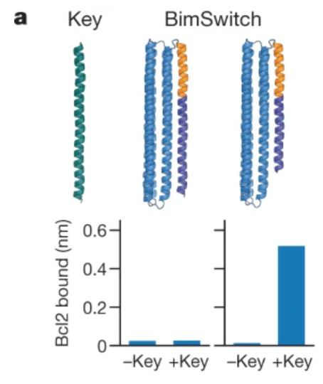
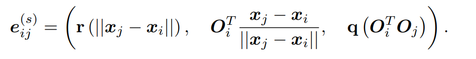
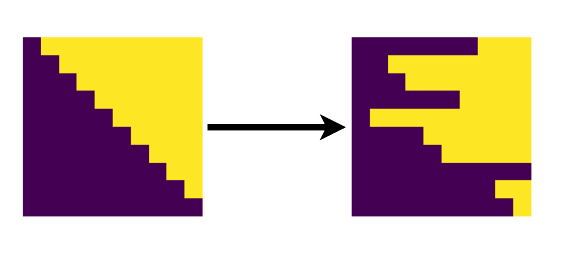
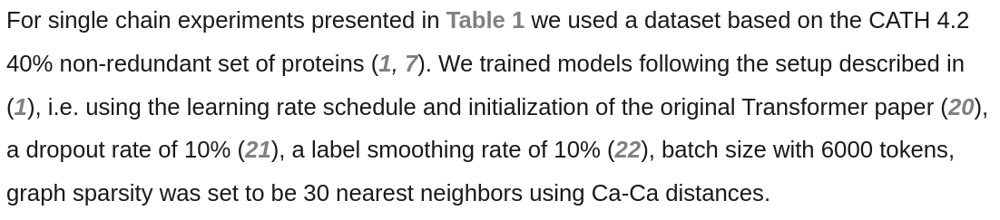
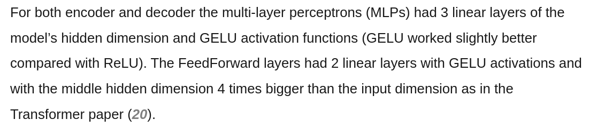

2022-06-23
Alex Lee
AlphaFold release was a major milestone in computational bio

Main points:
- Input amino acid sequence is transformed to a 3D structure
- Significant focus on sequence-alignment centric processing

What do we do once we have a structure?
- Dock small molecules for small molecule screening
- Understand structure-function relationships
- Forward design of proteins for desired functions: how can we make a protein that does X or Y?
De-novo design successes dependent on usage of well-understood protein families

If key (helical) and short latch /hinge structure (both helical):
- latch gets pushed aside, Bcl2 binds (not shown)
else:
- Bcl2 does not bind
Proposed alternative workflow (outlined in Cao, Nature 2022):
- Identify protein structure of interest (binds to protein X, stabilizes protein A and B to dimerize, etc.)
- Alternatively identify just a couple of important AA to bind to a given structure
- Identify a protein backbone/scaffold that can accomodate the desired molecular density
Our paper (a message passing neural network) focuses on (3).
What are message passing networks (MPNN) and what do they do?
- MPNN learn to encode useful properties of graphs for some downstream task.
- Utilizes flexibility of graphs for data representation in many systems.
Ex. molecular graph of citronella:
How to approach the 2 ring prediction problem?
Inaccurate but illustrative solution (without message passing):
$\mathcal{V} = [v_{1}, v_{2}, ... v_{N}], \mathrm{where\ N\ is\ the\ number\ of\ nodes} \\\ D(v_{n}) = degree(v_{n}) \\\ A(\mathcal{V}) = \frac{1}{N}\sum_{v}\ D(v), v \in \mathcal{V} \\\ $ \[\begin{aligned} \begin{equation} C(\mathcal{G})=\begin{cases} 1, & \text{if}\ A(\mathcal{V}) > k.\\ 0, & \text{otherwise}. \end{cases} \end{equation} \end{aligned} \]
$A$ aggregates features across nodes (often permutation invariant).
$C$ performs classification (or regression) over aggregated, refined features. This can target the whole graph or each node.
In general, MPNN will replace $D$ and $C$ (often recently also $A$) with a learned operation parameterized by neural networks.
High-level intuition for message passing operation
- Repeat $D$ and $A$ operations with a learned function (network) by; for each node $v_i$ (filled circle):
- Gather neighboring node embeddings (messages).
- Learn a function to update $v_i$ from the gathered messages by aggregating and refining them. ex: $v_{i} \leftarrow v_{i} + A(D(v_{i}, N_{v_i}))$, $N$ is neighborhood of $v_i$
Objective is to let information flow between nodes.
Intuition for ProteinMPNN and high-level workflow


- Encoder and decoder both update node and edge embeddings (more on that later)
- No self-attention, unlike previous work; all MLP's and message passing
- Decoder outputs predictions for each node's amino acid identity


Performance is robust compared to Rosetta, is related to noise level during training
Sequences designed using MPNN are much more soluble than AlphaFold
Demonstration of de-novo protein design enabled by MPNN
Techniques to increase performance
- Large (40$\rightarrow$46% sequence recovery): Feature engineering from Ingraham et al.
- Minor (40$\rightarrow$42% sequence recovery) Update of edge embeddings and node embeddings (instead of just node)
- Permuted decoding instead of sequential autoregressive
- Training with noise injection (on high res structures)
Spatial encodings for node and edge embeddings
Start with node embeddings (coordinates): $\mathcal{X} = \{x_i \in \mathbb{R}^3, 1 \leq i \leq N\}$
(N positions)
Compute orientations $O_i$ that define a local coordinate system for each node:
$O_i = [b_i\ \;\; n_i \;\; b_i \times n_i]$$(x_{i-1} - x_i)$ and $(x_{i+1}-x_i)$
$(x_{i-1}-x)$ and $(x_{i+1}-x_i)$

Finally edge features are computed like this:
In the paper we also augment with bond distances between intra-AA atoms (N$\rightarrow$C$\alpha$, N$\rightarrow$O etc.)
Explanation


alpha AA

beta AA
Possibly (?) an increase from autoregressive to random decoding
One way to do sequence-to-sequence prediction is do it autoregressively:
$p(\textbf{s}|\textbf{x}) = \prod_i\; p(s_i|\textbf{x}, \textbf{s}_{ < i})$In the paper, they chose to do it randomly by permuting the elements of a diagonal matrix:
In the paper, the gain in test set performance is pretty small (47.3 to 47.9 sequence recovery), so it's hard to know how well this worked.
Also, there was no hyperparameter tuning or performance variation quantification!
Hyperparameter decisions are not explained, also seem to come from a paper that isn't relevant to this method
 Could be mistaken, but this method is not a Transformer? Although, Ingraham reference paper is.
Takeaways:
- Protein design continues to make significant strides
- Remarkably simple method (no attention or more modern graph NN methods)
- Relatively small amount of data (~24k seqs w/ < 3.5 Å resolution) and only ~1.5 M parameter network [ResNet50 has 23M, MobileNet 13M]
- Initializing node embeddings to 0 at start somehow still works